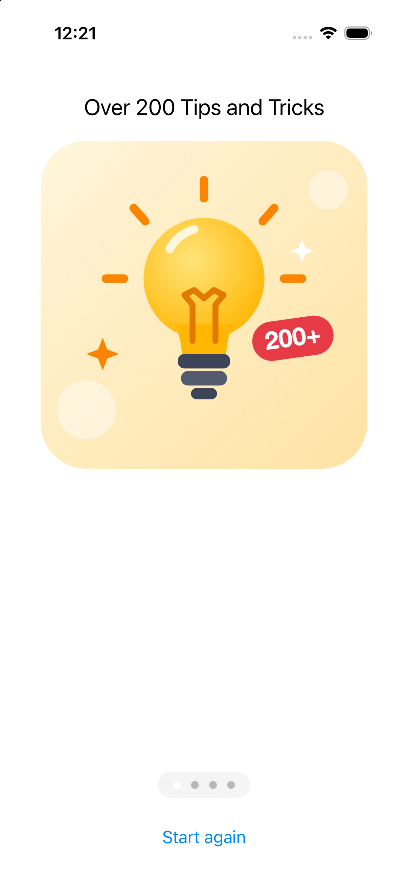
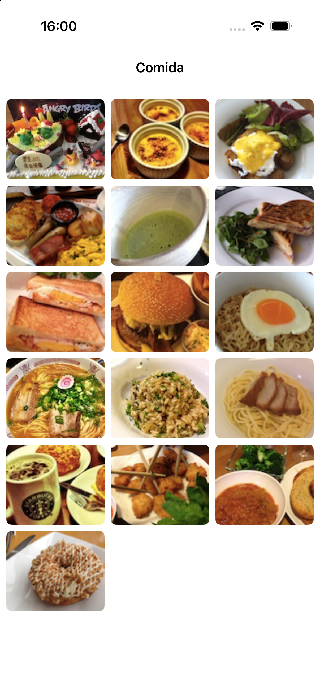
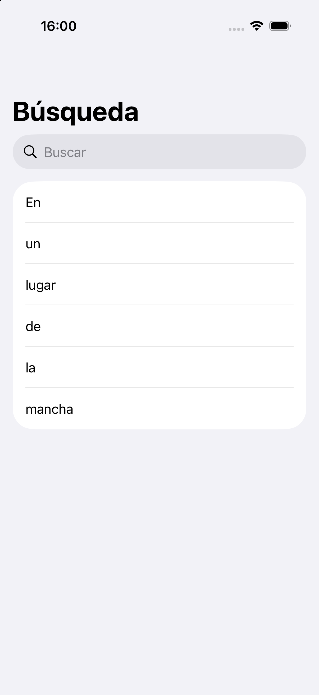

3- Contenedores y navegación
En esta sesión veremos tres formas de organizar contenido complejo: páginas por las que deslizarse, rejillas que se reorganizan según el espacio y tablas con buscador.
Las tres comparten un patrón que conviene reconocer: un contenedor que coloca el contenido, y un estado que dice en qué punto estamos (qué página se ve, qué texto se busca). Esa separación entre "qué se muestra" y "dónde estamos" es la que hace que no haya que escribir código de actualización para las vistas.
Ejercicio 1 - Contenido paginado
Vamos a construir un tutorial de bienvenida de cuatro páginas por las que el usuario pasa deslizando, con los puntos indicadores abajo y un botón para volver al principio.

TabView en modo página
TabView es el contenedor que normalmente dibuja una barra de pestañas debajo, pero cambiándole el estilo a .page se convierte en un contenedor paginado: las vistas que contiene pasan a ser páginas por las que el usuario avanza horizontalmente, con los puntos indicadores incluidos.
La página que se ve en cada momento se guarda en una variable de estado, que el TabView actualiza al deslizar y que nosotros podemos cambiar para saltar a otra página.
Creando el proyecto
Crea un proyecto iOS > App con Interface: SwiftUI llamado ejercicio_pageview, y añade a los Assets las cuatro imágenes de
imagenes_paginas.zip
(page1.png … page4.png).
La vista de una página
Como las cuatro páginas tienen la misma estructura y sólo cambian el título y la imagen, escribimos una vista parametrizada. Crea un fichero llamado PageContentView.swift:
import SwiftUI
struct PageContentView: View {
let titulo: String
let imagen: String
var body: some View {
VStack(spacing: 20) {
Text(titulo)
.font(.title2)
.multilineTextAlignment(.center)
Image(imagen)
.resizable()
.scaledToFit()
.padding(.horizontal, 40)
Spacer()
}
.padding(.top, 30)
}
}
El contenedor paginado
Y ahora el ContentView, con código para completar (instrucciones abajo):
import SwiftUI
struct ContentView: View {
let titulos = ["Over 200 Tips and Tricks",
"Discover Hidden Features",
"Bookmark Favorite Tip",
"Free Regular Update"]
let imagenes = ["page1", "page2", "page3", "page4"]
// a) Estado que recuerda en qué página estamos
var body: some View {
VStack {
TabView(/* b) enlaza aquí la selección */) {
// c) Una PageContentView por cada página, con su .tag
}
.tabViewStyle(.page(indexDisplayMode: .always))
.indexViewStyle(.page(backgroundDisplayMode: .always))
// d) Botón para volver a la primera página
}
}
}
#Preview {
ContentView()
}
Ejercicio
a) Declara @State private var paginaActual = 0.
b) Pasa la selección al TabView con TabView(selection: $paginaActual). Fíjate en
el $: el TabView escribe en esa variable cuando el usuario desliza la pantalla, así que necesita un binding.
c) Dentro del TabView, recorre las páginas con un ForEach sobre los índices y crea un PageContentView para cada una. Cada página necesita un .tag(i) para que la selección sepa a cuál corresponde:
ForEach(titulos.indices, id: \.self) { i in
PageContentView(titulo: titulos[i], imagen: imagenes[i])
.tag(i)
}
d) Añade debajo del TabView un Button("Start again") que ponga paginaActual a cero. Envuélvelo en withAnimation { ... } para que la vuelta a la primera página sea animada en lugar de dar un salto.
e) Ejecuta la app. Comprueba que puedes deslizar entre las cuatro páginas, que los puntos de abajo reflejan la página actual, y que el botón vuelve a la primera.
Ejercicio 2 - Rejilla de contenido
Ahora construiremos una rejilla de imágenes que se reorganiza sola según el espacio disponible: más columnas en un iPad o en horizontal, menos en un iPhone en vertical. En UIKit esto se implementaba mediante un CollectionViewController, pero en SwiftUI es bastante más sencillo.

Creando el proyecto
Crea un proyecto iOS > App con ISwiftUI llamado
ejercicio_collection. Descarga imagenes_comida.zip y arrastra las
16 imágenes (1.jpg … 16.jpg) a los Assets.
Rejillas en SwiftUI
Una rejilla se construye con LazyVGrid (o LazyHGrid) dentro de un ScrollView. El lazy del nombre significa que las vistas sólo se crean cuando están a punto de aparecer en pantalla: con 16 imágenes da igual, pero con cientos es lo que mantiene la app fluida.
La rejilla se define con un array de columnas. Hay tres formas de especificarlas:
// Dos columnas de ancho fijo
[GridItem(.fixed(100)), GridItem(.fixed(100))]
// Dos columnas que se reparten el espacio
[GridItem(.flexible()), GridItem(.flexible())]
// Tantas columnas como quepan, de 100 puntos mínimo
[GridItem(.adaptive(minimum: 100))]
La tercera es la interesante: en lugar de decir cuántas columnas quieres, indicamos el ancho mínimo que debe tener cada una y dejamos que el sistema calcule cuántas caben. Así la rejilla se adapta sola al girar el dispositivo o al cambiar de dispositivo, sin código adicional.
El código
import SwiftUI
struct ContentView: View {
// a) Define aquí las columnas
var body: some View {
NavigationStack {
ScrollView {
// b) La rejilla con las 16 imágenes
}
.navigationTitle("Comida")
.navigationBarTitleDisplayMode(.inline)
}
}
}
#Preview {
ContentView()
}
Ejercicio
a) Declara las columnas como let columnas = [GridItem(.adaptive(minimum: 100), spacing: 8)].
b) Dentro del ScrollView, crea un LazyVGrid(columns: columnas, spacing: 8) y recorre las 16 imágenes con un ForEach(1...16, id: \.self). Cada imagen se construye con Image("\(i)") y necesita:
.resizable()
.scaledToFill()
.frame(height: 100)
.clipped()
.cornerRadius(6)
Piensa por qué hace falta .clipped() junto a .scaledToFill(): prueba a quitarlo y
observa qué ocurre con las imágenes que no son cuadradas.
c) Ejecuta la app en un iPhone y gíralo. Después lánzala en un iPad. Comprueba que el número de columnas cambia solo en los tres casos, sin que hayas escrito ningún código para ello.
d) Cambia el minimum: de 100 a 150 y vuelve a probar. ¿Cuántas columnas salen ahora en el iPhone en vertical?
Ejercicio 3 - Barra de búsqueda
Por último, vamos a crear una tabla con un buscador que filtra los resultados mientras se escribe.

Buscar con .searchable
Añadir un buscador a una lista implica dos elementos:
- Una variable de estado con el texto que el usuario va escribiendo.
- Una lista que no muestra los datos completos, sino el resultado de filtrarlos por ese texto.
El modificador .searchable se encarga de dibujar la barra de búsqueda y de escribir en esa variable. El filtrado lo define el programador y es sólo una línea.
Lo importante es que no hay dos listas: no existe una lista "normal" y otra "de resultados". Hay una sola lista cuyo contenido depende del texto de búsqueda, que cuando está vacío son todos los datos.
Creando el proyecto
Crea un proyecto iOS > App con Interface: SwiftUI llamado
ejercicio_searchbar.
El código
import SwiftUI
struct ContentView: View {
let contenido = ["En", "un", "lugar", "de", "la", "mancha"]
// a) Estado con el texto que el usuario escribe
// b) Propiedad calculada con los resultados filtrados
var resultados: [String] {
// ...
}
var body: some View {
NavigationStack {
List(resultados, id: \.self) { palabra in
Text(palabra)
}
.navigationTitle("Búsqueda")
// c) El modificador de búsqueda
}
}
}
#Preview {
ContentView()
}
Ejercicio
a) Declara @State private var textoBusqueda = "".
b) Completa la propiedad calculada resultados. Si el texto de búsqueda está vacío debe devolver contenido entero. Si no, sólo las palabras que empiezan por ese texto, sin distinguir mayúsculas. Una pista:
guard !textoBusqueda.isEmpty else { return contenido }
return contenido.filter { $0.lowercased().hasPrefix(textoBusqueda.lowercased()) }
Fíjate en que resultados no es @State. Se recalcula solo cuando cambia textoBusqueda, así que no puede quedarse desincronizado.
c) Añade el modificador de búsqueda:
.searchable(text: $textoBusqueda,
placement: .navigationBarDrawer(displayMode: .always),
prompt: "Buscar")
d) Ejecuta la app y escribe l en el buscador. Deben quedar visibles sólo "lugar" y
"la".
Importante: displayMode: .always
Si dejas .searchable(text: $textoBusqueda) sin indicar placement, en iOS 17 la barra de búsqueda queda oculta hasta que el usuario arrastra la lista hacia abajo. Como esta lista sólo tiene seis filas, no llega a desplazarse y la barra no aparecería nunca: la pantalla se vería sin buscador. En iOS 26 sí que sale por defecto.
Es un buen ejemplo de por qué conviene probar también en la versión de iOS más baja que soporte tu app, y no fiarse del comportamiento por defecto cuando hay una opción explícita.
e) Comprueba ese comportamiento tú mismo: quita el placement y lanza la app en un simulador con iOS 17. Después vuelve a añadirlo.
f) Para ampliar. Añade .searchSuggestions para ofrecer sugerencias mientras se escribe, o cambia el filtro de "empieza por" a "contiene" usando localizedCaseInsensitiveContains. ¿Qué resultados salen ahora al escribir a?